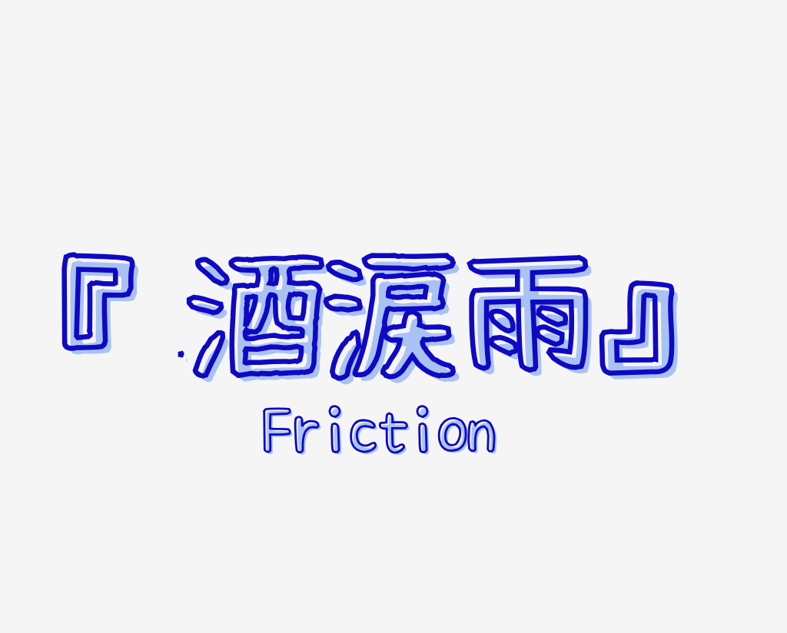

明花繚乱
明和に中学生たちがやってきた。
思い出の北館も生まれ変わっている。
中高一貫を経て大きな転換期を迎えても、
明和生一人一人が個性を咲かせ、
自分らしく輝く、
明和生の作る最高が
今始まる
更新情報
| 9/10 | HR企画、劇企画、有志・五役企画、体育祭を更新しました |
| 9/8 | トップに掲載されているスケジュールを修正しました |
| 9/7 | 明和祭2025 Webサイト 体育祭、Q&Aを公開しました |
| 9/6 | 明和祭2025 Webサイト トップページを公開しました |
案内
| 体育祭 | ||
|---|---|---|
| 令和7年 9月11日（木） | ||
| 文化祭 | ||
| 令和7年 9月13日（土） | ||
| オープニング | 8:45～9:45 | 非公開 |
| 企画運営 | 11:00〜16:00 | 一般公開 |
| 令和7年 9月14日（日） | ||
| 企画運営 | 9:00〜16:00 | 一般公開 |
| 令和7年 9月15日（月） | ||
| 企画運営 | 9:00〜11:00 | 非公開 |
| フィナーレ | 13:45〜16:00 | 非公開 |
| 名鉄瀬戸線「東大手」駅 | |
|---|---|
| 名鉄瀬戸線「東大手」駅「県庁・市役所方面出口」から東へ徒歩約1分 | |
| 名古屋市営地下鉄 名城線「名古屋城(旧: 市役所)」駅 | |
| 「1番出口」から東へ徒歩約8分 | |
| 名古屋市営バス「市役所」 東へ徒歩7分 | |
| 名古屋市営バス「清水口」 西へ徒歩8分 | |
| 名古屋市営バス「明和高校前」 徒歩1分弱 | |
キャラクター&テーマソング
下の項目をクリックすると詳細が開けます！
キャラクター

めいわんこ
たくさんの人の明和愛を形にしたキャラクター。
明和推しのわんこ。
明和生を見つけるとついてくる。
答えが1(ワン)になる計算が得意。
テーマソング

歌詞
この雨が止んだなら
あの坂で待ち合わせしようよ
紫陽花の色に
移り変わる目と
追いかけて追いかけて
光る雨だれを
抱きしめて待ってたって
笑って欲しいから
特別な事なんて無くていい
ただ日常を切り取ったような
やさしい夢を見させて
追想の狭間で
映る影は長く伸びて
まだまだ君の隣で眠らせて
夕暮れのチャイムで
ディレイする僕の目は
この街にも慣れてきたみたいだなって
問いかけて問いかけて
さぐり合う答えを
僕は知らないんだ
秘密を抱えているんでしょ？
そばにはいられないや
言わなきゃわかんないんだろう
なにもが痛くて眩しくて
嘘を隠すために火をつけて
おさらばかな
もう戻れやしないんだよ
思い出が輝くときに
君の声が響くんだろうななんて
三日月みたいな瞳も
やわらかな日差しも
縋ってばかりの頼りない僕を許して
パンフレット
生徒会誌編集委員会が作成した明和祭パンフレットが、受付で配布されます！
今年度は諸事情によりWeb上での公開は行いません。
当日受付でお楽しみください！